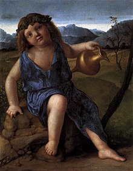

Birth and Childhood of Dionysus
Dionysus, known as the god of wine, winemaking, and ecstasy, has a unique and miraculous origin story that sets him apart from other Olympian gods. His birth is a tale of love, jealousy, and divine intervention.
The Story of Zeus and Semele
The saga begins with Zeus, the king of the gods, falling in love with Semele, a mortal princess. Their union, however, sparked the jealousy of Hera, Zeus's wife. Devising a cunning plan, Hera tricked Semele into asking Zeus to reveal his true form. As mortals cannot behold gods in their divine state, Semele perished upon witnessing Zeus's godly visage. However, Zeus managed to save their unborn child, Dionysus, by sewing him into his thigh until he was ready to be born, a testament to his unique nature, bridging the mortal and the divine.
Upbringing in Nysa
After his birth, Dionysus was taken to Nysa, a mythical land, to be raised away from Hera's wrath. The nymphs of Nysa, along with figures like Hermes or Silenus in some accounts, nurtured and educated the young god. This period was crucial, as it instilled in Dionysus a deep connection with nature, fertility, and, most notably, the vine.
Early Signs of His Powers
From a young age, Dionysus displayed signs of his divine heritage. Legends tell of his ability to turn water into wine and to bring joy and ecstasy to those around him. These early miracles foreshadowed his future as the god of wine and revelry, highlighting his capability to transcend the ordinary and bring forth the extraordinary.